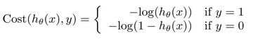
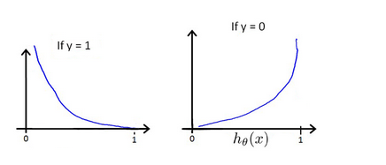
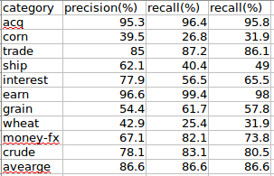
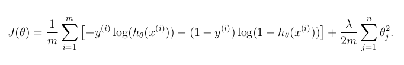
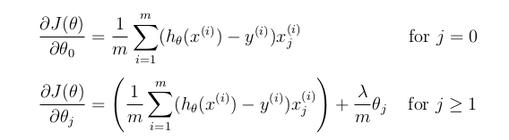
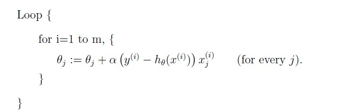

对于逻辑回归函数，我们的假设方程为：
其中，$g(z)=\frac{1}{1+e^{-z}}$称之为sigmoid函数。
那么为什么要在逻辑回归里使用sigmoid函数呢，观察逻辑回归的假设方程可以发现，如果没有使用sigmoid函数，假设方程与线性回归的假设方程是一样的。但是很显然，线性回归的假设方程的值域为$(-\infty,+\infty)$,而二分类问题一般去之都是固定的值{0,1}.这个时候我们可以使用sigmoid函数，它的作用相当与实现了一个映射，将$(-\infty,+\infty)$值域映射到（0,1）之间。
我们假定：
上面公式我们可以合并成：
假设有ｍ个训练集并且相互独立，这参数的似然方程可以表述为：
下面可以采用最大似然估计来求出参数值：
而后对参数$\theta_j$求偏导:
可以看出，通过极大似然估计来求解参数在逻辑回归中很难实现．
梯度下降
在线性回归中，我们的代价函数是这么定义的：
将我们的假设方程$h_\theta(x)=\frac{1}{1+e^{-\theta^Tx}}$代入上面的代价方程会发现代价函数是一个非凸函数，所以很难获得最优解． 这里我们需要重新定义代价函数：
其中

$h\theta(x)与Cost(y^{(i)},h\theta(x^{(i)}))$之间的关系如下图所示：

当ｙ＝１时，如果假设方程$h_\theta(x)=1$,代价函数为０，如果代假设方程越接近０，则代价函数越大．
当ｙ＝０时，如果假设方程$h_\theta(x)=０$,代价函数为０，如果代假设方程越接近１，则代价函数越大．
可以将代价方程组合为如下格式：
那么含有ｍ个样例的数据集的代价代价函数可以表示为:
而后，我们可以按如下方式不断的更新$\theta$值，指导代价函数达到最优值，这个时候的所的参数便为解．
在之前讨论过的文本分类问题中，我们对每一类别用互信息特征选择方法选择100个特征，文档集的特征总数为741个，用这些特征构建向量空间模型，用逻辑回归进行测试（用scikit-learn工具包），Ｆ_1值能达到86.6%,具体如下图所示：

正则化
为了避免过拟合现象,可以采用正则化方法.正则化方法是结构风险最小化策略的实现,是在经验风险上加上一个正则化项(regularizer)或罚项(penalty).正则化项一般是模型复杂度的单调递增函数,模型越复杂,正则化值就越大.
$L_2$正则化代价函数定义为:

当我们采用梯度下降发求解参数时,$\theta$按如下方式进行迭代:

$L_1$正则化代价函数定义为:
采用$L_1$正则化一般可以产生稀疏解,也就是说我们得到的参数解$\theta中会有很多位为0,这这可以理解为\theta_j=0$对应的特征的贡献为0,我们可以直接忽略这些特征.
为了避免模型的过拟合,我们还可以通过减少特征数目,只选取对模型有很强分类能力或贡献的强特征,从而提出那些表示能力较差的弱特征.这在特征选择中有讲解.同时,我们也可以通过交叉验证的方式进行来查模型是否产生过拟合.
随机梯度下降法
从上面的梯度下降可以知道,在每次对$\theta进行迭代的过程中,我们要通过整个训练集更新\theta值$.那么当训练集非常大的时候,显然更新参数将变得非常耗时.随机梯度下降法可以弥补这些缺点.
在随机梯度下降法中,我们定义代价函数为一个单一训练实例的代价:
伪代码如下:

随机梯度下降算法在每一次计算之后便更新参数$\theta$,而不需要在整个训练集上进行迭代.随机梯度法比梯度下降法运算速度要快,但是缺点是,随机梯度下降法不是每一步都朝着”正确”的方向迈出的,因此,算法虽然会逐渐走向全局最小值的位置,但是无法达到全局最优解,而是在最优解附近振荡.
在线算法和批处理算法
批处理和在线学习算法都是基于梯度下降原理实现的,批处理需要每次计算时都要考虑整个训练集的数据,并找到一个最快下降方向进行迭代.而在线学习算法只着眼于当前的某一观测值.前者的优点是收敛速度快,缺点是计算复杂.后者的优点是计算量小,收敛速度慢.